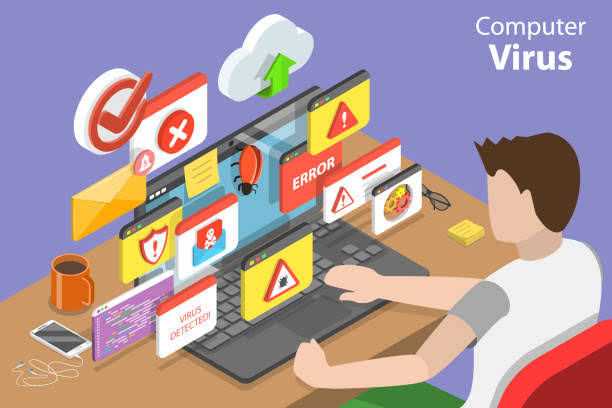
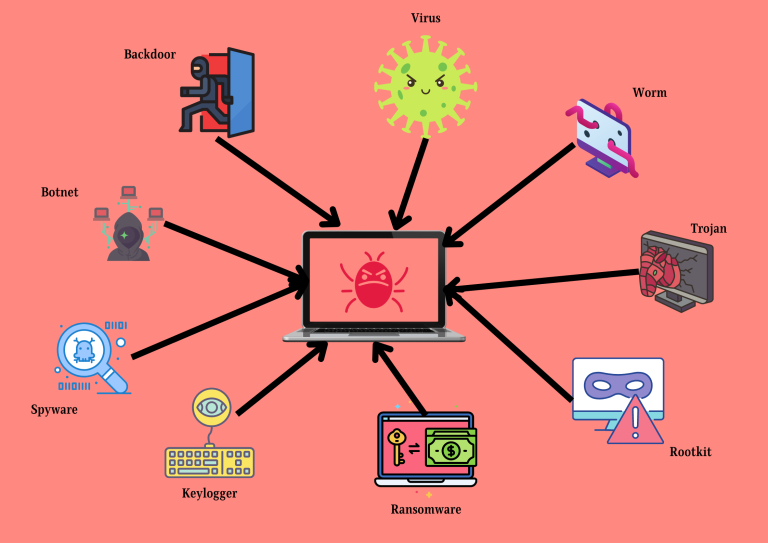
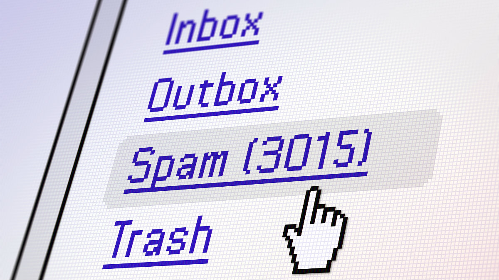

What are Viruses?
Computer viruses are malicious programs designed to replicate and spread from one device to another, causing damage or stealing data. They are often hidden within legitimate files or programs.
What is Malware?
Malware is a broader term that includes viruses, worms, ransomware, spyware, and more. It is any software intentionally designed to cause harm to a computer system.
What is Spam?
Spam refers to unsolicited messages, often sent in bulk, typically through email. While some spam is harmless advertising, others can contain phishing links or malicious attachments.
The Role of Antiviruses
Antivirus software helps protect your computer by detecting, blocking, and removing viruses and other types of malware. It is a critical tool for maintaining cybersecurity.